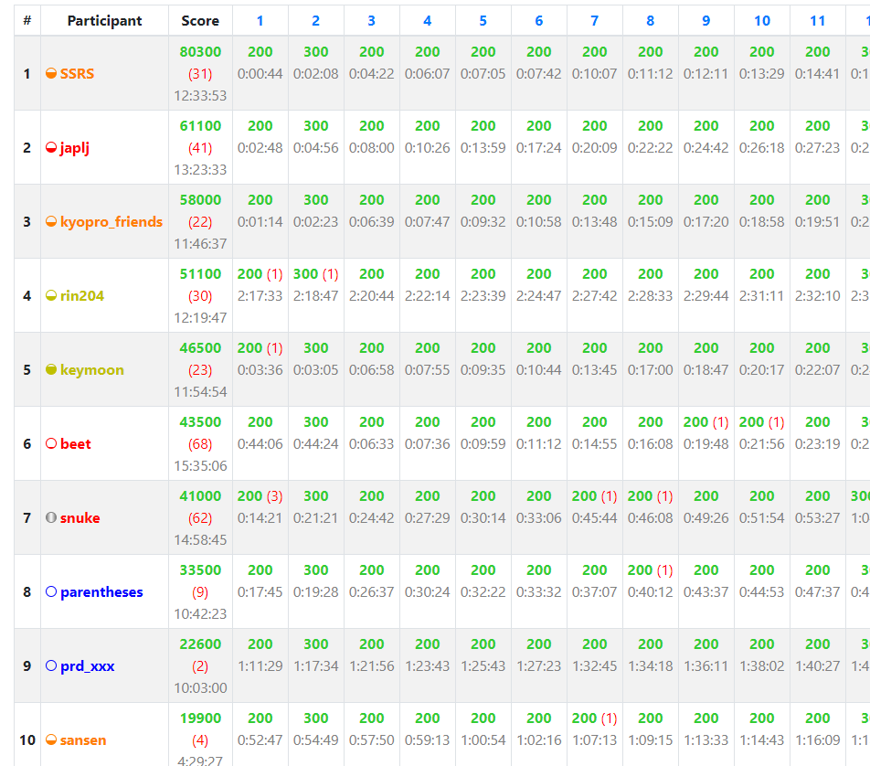

ページが消えて見えないとかがありそうなのでできるだけ引用しています。
Boot camp for Beginners 300問耐久
beetさん(@beet_aizu)が企画した、2021/02/23に行われたバチャ。
ルール(以下引用)
ブラウザと配信ソフト以外使用禁止 コーディングは問題ページかコードテストから行う 検索禁止、ただし以下のドキュメントは除く Python C++ 自分が書いたコードを再利用するのは可
(ただし、必ずしもルールに従う必要はないとのこと)
単純計算で1問2分である。beetさんは8時間くらいで終わるかな～と思っていたらしい。
結果は以下の通り(解いた問題数順)
1位 SSRSさん 273完
ぶっちぎりの一位。このあと300問まで解いていた。ちなみに途中で40分くらい夕飯を食べるために離席している。
2位 japljさん 220完
配信していた。配信元
3位 kyopro_friendsさん 211完
配信していた。ライブラリとWandbox使用。配信元1 , 配信元2
4位 rin204さん 190完
5位 keymoonさん 175完
6位 snukeさん 161完
配信していた。10時間以上ずっと朗らかに喋っていた。途中でくVCに出てその後解説したりしてた。ちなみに寝ていないらしい。眠すぎて脳死提出をしていた。配信元
7位 beetさん 150完
企画主。配信していた。100問終わってあとに後ろから解いていた。一年後に残りを解くらしい配信元
これより下はリンクから見に行ってください。
ちなみに、noimiさんが終了一時間前くらいから始めて翌朝11時頃に300問終わらせてた。
noimiさんのTwitterより
23 時から bootcamp 300 問バチャを 12 時間ぶっとおしでやった感想ですが、やらない方がいいと思います。
Boot camp for Beginnersはbeginnerと入っているが、HARDになると普通に水diffが入ってくるので決してbeginner用ではない。
レッドコーダーがこんなに苦戦する問題って...
ちなみに、このAtCoder event historyを作ろうとした要因です。(こんな伝説を風化してはいけない)